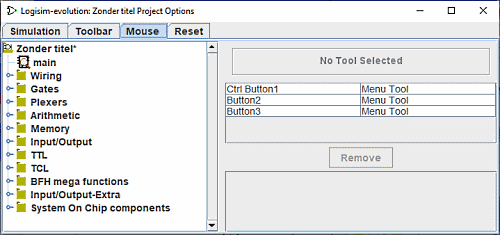
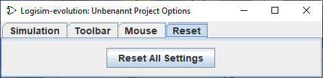

鼠标选项卡
默认情况下，当您在 Logisim-evolution 的绘图区域中单击鼠标时，将使用当前选择的工具。 如果您right-click or control-click，它将在鼠标下方显示当前组件的弹出菜单。
Logisim-evolution 允许您修改此行为，使您无需一直转到工具栏和/或资源管理器。 （如果您是左撇子，这也可能很方便。）鼠标按钮和修饰键的每种组合（shift, control, and alt) 可以映射到不同的工具。 鼠标选项卡允许您配置这些映射。

-
左侧是一个资源管理器，您可以在其中选择要映射的工具。
-
右上角是一个矩形，您可以使用要单击的鼠标组合在其中单击。 例如，如果您想通过按住Shift键拖动来创建新电线，那么您首先需要在资源管理器中选择接线工具（在Base库下）； 然后您将 shift-click，显示“单击使用组合来映射接线工具”。 如果该组合已被使用，则映射将被新工具替换。
-
该区域下方是当前映射的列表。 请注意，未列出的任何组合都仅使用当前选择的工具。
-
下面是Remove按钮，您可以在其中删除按钮上方表格中当前选择的映射。 那么，将来，该鼠标组合将映射到工具栏或资源管理器窗格中当前选择的任何工具。
-
下面是映射列表中当前选择的工具的属性列表。 每个鼠标映射工具都有自己的一组属性，与资源管理器窗格和工具栏中使用的属性不同。 您可以在此处编辑这些属性值。
重置选项卡

这个选项卡非常简单。 仅使用“重置为模型”按钮将reset All Settngs为The Template tab 。
下一步： 用户指南。